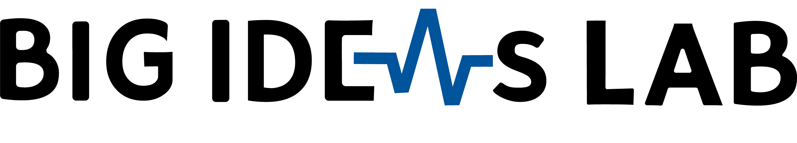
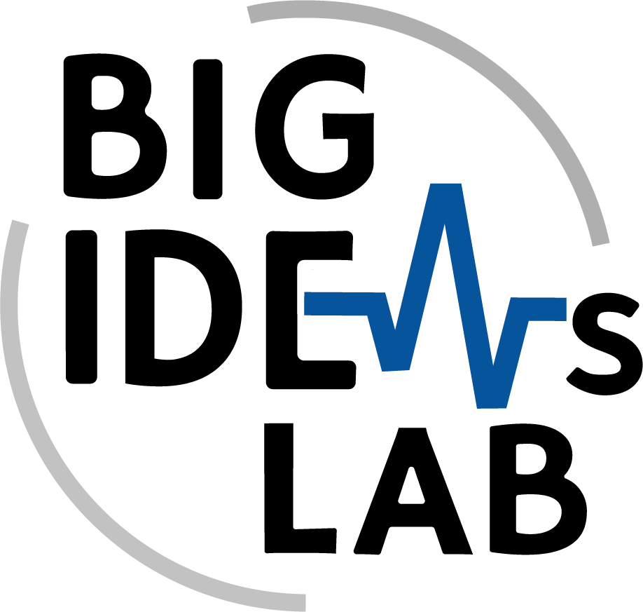
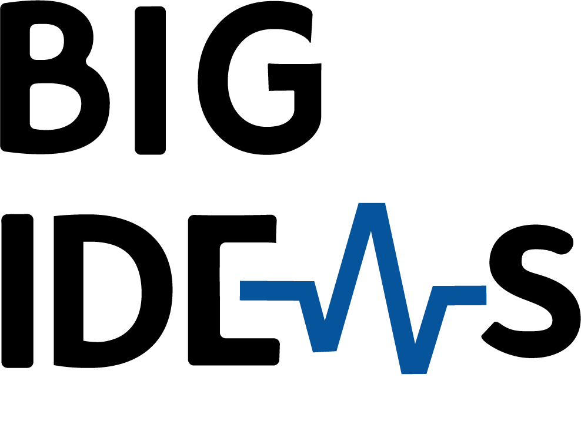
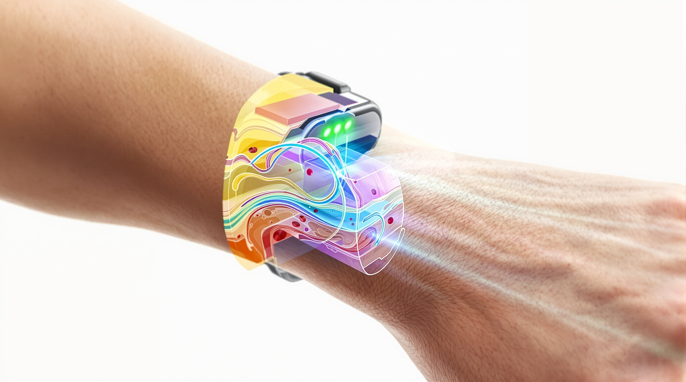

--color-blue-900#012169 · primary identity

Design System--color-blue-900#012169 · primary identity
--color-blue-800#003A70 · primary hover
--color-blue-700#00539B · focus
--color-blue-100#E8F1FA · selected surface
--color-blue-050#F4F8FC · accent wash
--color-white#FFFFFF · background
--color-ink-950#111318 · primary text
--color-ink-700#3F4650 · secondary text
--color-ink-500#68717D · muted text
--color-gray-200#D9DEE5 · border
--color-gray-100#E5E7EB · quiet surface
--color-gray-050#F7F8FA · surface
Three self-hosted, free, open-source families define every type role.
--type-display-xlA clear opening
Source Serif 4 · 400--type-display-lA strong statement
Source Serif 4 · 400--type-heading-1Section heading
Inter · 500--type-heading-2Component heading
Inter · 500--type-heading-3Entry title
Inter · 500--type-body-lEvidence needs room to be understood.
Inter · 400--type-bodyConcise explanatory copy for a slide.
Inter · 400--type-smallCaption and support text
Inter · 400--type-labelSection label
Inter · 500--type-data1920 × 1080 · 16:9
IBM Plex Mono · 400 · .875rem / 1.4Use the exact approved file path shown below. Preserve proportions, avoid recoloring or effects, and place it on the indicated light or dark background.

Path: design-system/assets/logos/black_bil_circle.png
Use: approved light background asset
Path: design-system/assets/logos/black_bil_horizontal.png
Use: approved light background asset

Path: design-system/assets/logos/black_bil_horizontal2.png
Use: approved light background asset

Path: design-system/assets/logos/white_bil_circle.png
Use: approved dark background asset
Path: design-system/assets/logos/white_bil_horizontal.png
Use: approved dark background asset

Path: design-system/assets/logos/white_bil_two_line.png
Use: approved dark background asset
Path: design-system/assets/logos/black_duke_bigideaslab.png
Use: approved light background asset
Path: design-system/assets/logos/white_duke_bigideaslab.png
Use: approved dark background asset
Path: design-system/assets/logos/white_duke_bil_circle.png
Use: approved dark background asset
Path: design-system/assets/logos/white_duke_bil_horizontal.png
Use: approved dark background asset
Path: design-system/assets/logos/white_duke_bil_horizontal2.png
Use: approved dark background asset
Path: design-system/assets/logos/Duke_BiomedicalEngineering_Logo.png
Use: approved light background asset
side, footer · Sizes: compact, standardLimit: name 32 chars; role 48 chars.Accessible: informative avatar alt or decorative when name is adjacent.main · Sizes: compactLimit: one marker; label 64 chars.Accessible: labeled link with visible focus.footer · Sizes: compact, standardLimit: one line; 140 chars.Accessible: footer landmark and readable text.footer, main · Sizes: standard, wideLimit: 2–4 entries; 110 chars each.Accessible: ordered list with visible numbering.chrome, footer · Sizes: compactLimit: bounded current page and total.Accessible: live tracker with labeled previous/next controls.Methods
chrome · Sizes: compact, standardLimit: 2–4 words.Accessible: visible heading-level label.chrome, footer · Sizes: compact, standardLimit: 3–7 steps.Accessible: bar paired with current-step text.main, side · Sizes: compact, standard, wideLimit: one title; body 90 chars.Accessible: the title is the accessible name; the rounded border is decoration.
media, main · Sizes: standard, wideLimit: one image; caption 90 chars.Accessible: meaningful alt text adjacent to caption.media, main · Sizes: standard, wideLimit: 2–4 images; short captions.Accessible: distinct alt text in source order.main, side · Sizes: standard, wideLimit: one value; label 36 chars.Accessible: value, unit, qualifier read as a group.main · Sizes: standard, wideLimit: two items; one criterion.Accessible: headings and values, not color alone.main · Sizes: standard, wideLimit: 3–5 steps; two lines each.Accessible: ordered list with visible names.